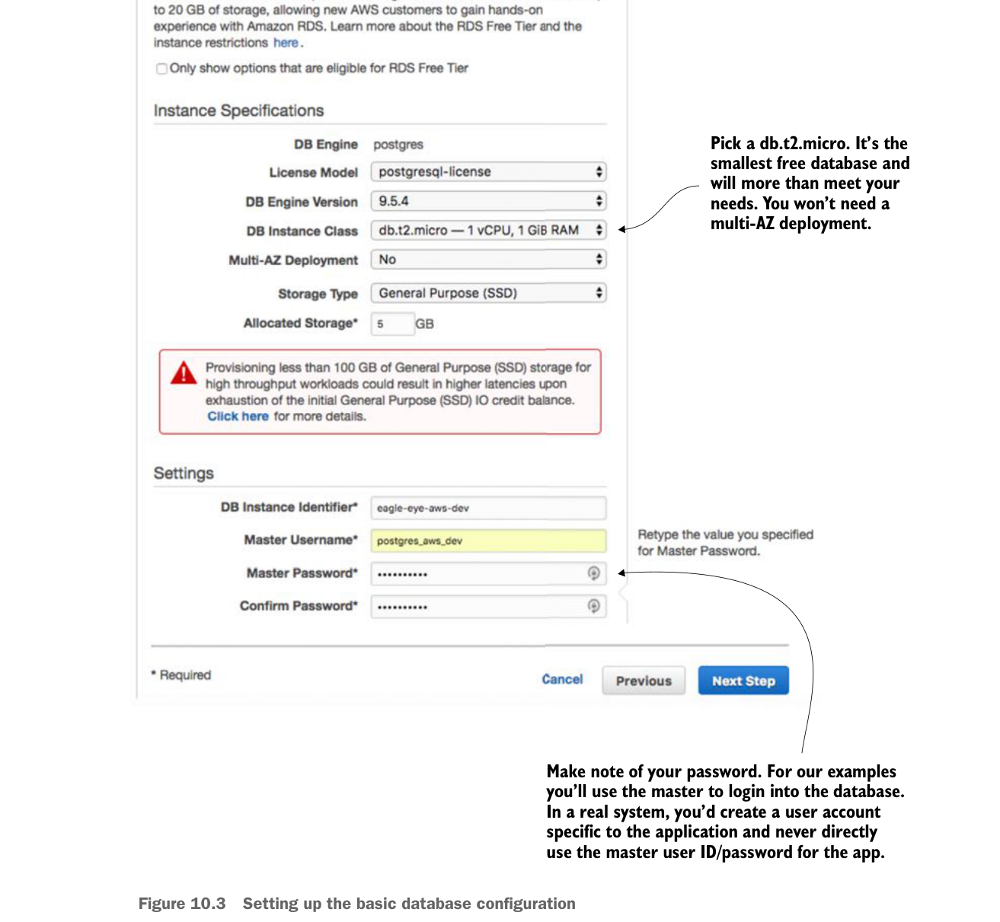

Tiếp theo, bạn sẽ thiết lập thông tin cơ bản về cơ sở dữ liệu PostgreSQL của mình và đồng thời đặt ID người dùng master cùng mật khẩu mà bạn sẽ dùng để đăng nhập vào cơ sở dữ liệu. Hình 10.3 hiển thị màn hình này.

Thiết lập cấu hình cơ sở dữ liệu cơ bản